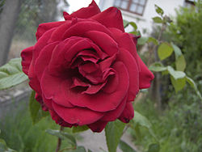
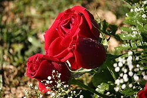

Слово троянда — запозичення з новогрецької мови: від τριάντα «тридцять» (пелюстків), що виникло в результаті скорочення грец. τριαντάφυλλο — «тридцятилистник»
роянда була відома в стародавньому Вавилоні і отримала особливе поширення в Персії (тепер Іран), де вирощувалася у величезній кількості. У всіх народів свої оповіді: у русичів — билини про богатирів, у фінів — «Калевала», у естонців — «Син Калева», у французів — «Пісня про Роланда». До таких творінь народного епосу належать і давньогрецькі поеми «Іліада» і «Одіссея», а в іранців — «Гюль Наме» — книга, що прославляє троянду.[4] Перські поети Гафіз та Сааді називають свою країну «Гюлістан» — «Сад троянд» («Гюль» — «троянда»)
Троя́нда, шипши́на (Rosa L.) — рід і культурна форма рослин родини розових (дикорослі — див. Шипшина), листопадні, рідко вічнозелені кущі до 4 метрів заввишки. Дикі рослини насамперед у помірному кліматі. Відомо близько 300—400 видів дикої троянди. Рослини зазвичай мають форму куща або ліани. У класичному зображенні троянда має 32 пелюстки, звідси назва роза (троянда) вітрів. Відомо близько 6 000 сортів, що їх отримано шляхом гібридизації й відбору (за іншими даними, тепер налічують понад 14 тисяч сортів троянд). У Японії виведена троянда «хамелеон», яка змінює своє забарвлення від освітлення. Вдень вона яскраво-червона, ввечері — біла[4]. Виведені сорти троянд зберігають і розмножують протягом багатьох років за допомогою щеплення бруньок і живців на шипшині
Мусульмани не дозволяли наступити навіть на пелюстку, що впала на землю[4]. Привезена зі східних країн у стародавню Грецію, троянда і там вирощувалася у величезній кількості.[11] У стародавній Греції троянда була присвячена богині краси Афродіті, її храми оточували якнайширші сади з троянд. Трояндами усипали дорогу воїнів, що поверталися з перемогою.
з Греції троянди вивозять в Єгипет і Рим.[11] Єгипетська цариця Клеопатра на одному з бенкетів веліла покрити всю підлогу пелюстками троянд шаром у півметра, які притримувались тонкою шовковою сіткою[4]. Зі стелі під час бенкету сипалися дощем трояндові пелюстки. Під час прогулянок на галерах поверхня води була всипана трояндами.[4] Римляни нагороджували трояндами за видатні заслуги. Вінком з троянд прикрашали голову переможця. Троянда була емблемою, свого роду орденом хоробрості. Римські воїни вірили, що троянда вселяє мужність, і замість шоломів одягали вінки з троянд. У квітні — травні в Римі влаштовували свято троянд — «розалії» — в пам'ять померлих
У римських будинках часто вішали над столом гілку троянди або зображували її на стелі як символ того, що говорилось за столом під трояндою — секрет[4]. З тих пір зберігся вираз: «Я тобі сказав під трояндою», по-латині: «sub rosa dictum» («суб роза діктум»). Римляни прикрашали трояндами і обливали трояндовою олією могили[4]. Римські поети Вергілій та Овідій оспівували троянди в своїх одах. Починаючи з XI століття, римський папа щорічно в день, званий «Трояндова неділя» (Dominica in rosa), нагороджував золотою трояндою, посипаною діамантами, кого-небудь з королів
Споживання великої кількості троянд патриціями і імператорським двором призвело до виникнення «розаріумів», садів з одних троянд різних сортів, і навіть на полях, замість хліба, стали вирощувати троянди. Багаті люди за великі гроші виписували троянди з Греції та Єгипту. Такий стан підривав добробут народу.